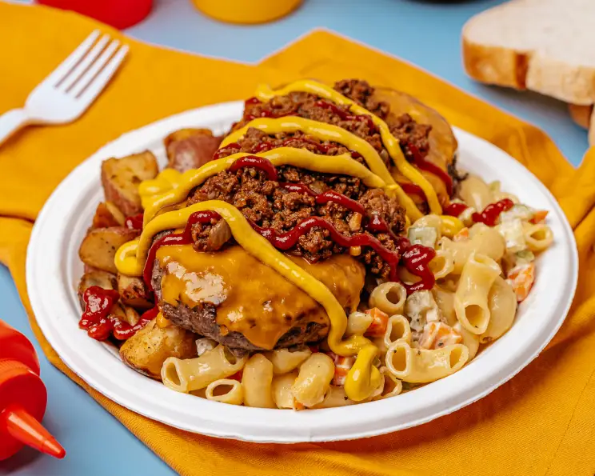

Garbage plate
Home

Ingredients
- 1-1.5 cup cooked macaroni
- .25 cup mayonaise
- 2 tablespoons diced celery
- 1 tablespoon chopped carrot
- .25 teaspoon salt
- .25 teaspoon pepper
- 1 large potato
- 1 tablespoon butter
- 2 hamburger patties
- 2 slices cheese
- mustard
- horseradish
- hot chili sauce
- 3 slices Italian bread
- chopped onion (optional)
- refried beans (optional)
Steps
- Mix together the noodles, mayo, celery, seasoning, and carrots and place into a large square foam container (or plate, but not as authentic).
- Fry potatoes in butter until very crispy then put next to mac salad on plate.
- Place OPTIONAL beans of plate if needed.
- Cook hamburger until well done and top with sliced cheese.
- Then place burgers ON TOP of the mac salad and home fries.
- Mix together about equal parts mustard and horseradish and pour on top of burgers and top with optional onions.
- Pour hot sauce or VERY LARGE spoonfuls of special sauce and a HUGE glob of ketchup over burgers (some like to stir everything together so its one huge mess).
- Eat with plastic fork, or just use the bread as a spoon and try not to pass out. This should take about an hour to finish.
- YUM, every drunk college kids dream food.